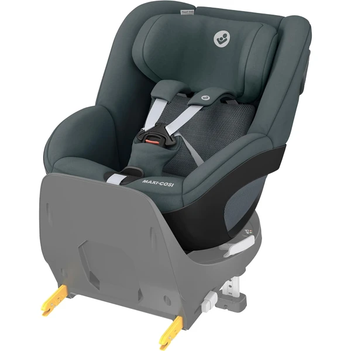
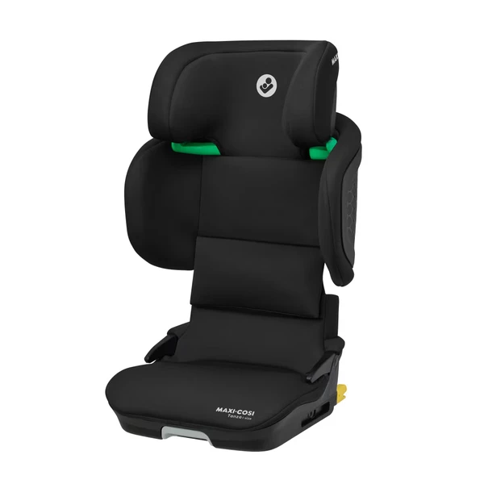

Sillas de coche Maxi-Cosi: qué ofrece la marca
Maxi-Cosi es una de las marcas con más recorrido en sillas de coche infantiles, con más de cuatro décadas centradas en seguridad. Su catálogo cubre desde portabebés ligeros para recién nacido hasta evolutivas que acompañan al niño hasta los 12 años.
La mayoría de sus modelos actuales cumplen la normativa i-Size — si quieres entender la diferencia con la normativa clásica R44/04, consulta la guía de normativa.
¿Quieres verlas todas juntas?
Compara los modelos de Maxi-Cosi con los del resto de marcas en nuestro comparador de sillitas de coche.
Modelos Maxi-Cosi por etapa

Emerald 360 S i-Size
Silla evolutiva "todo en uno" que acompaña desde el nacimiento hasta los 12 años, con giro de 360° para facilitar la colocación del bebé sin forzar la espalda.
Características principales
Lo que destacan las familias
Sobre todo el giro de 360°, que facilita mucho colocar y sacar al bebé del coche sin tener que forzar posturas incómodas, además de la comodidad de los acolchados incluso para un recién nacido.

Pearl 360 i-Size
Silla i-Size compacta y ligera (7,45 kg) que acompaña desde los 3 meses hasta los 4 años, con giro de 360° (FlexiSpin) al instalarla sobre su base FamilyFix 360.
Características principales
Lo que destacan las familias
El giro de 360° con la base (incluso con una sola mano), que facilita mucho la colocación del bebé, además de la calidad de los materiales y lo blandito del acolchado.

Tanza i-Size
Elevador sin arnés propio, compacto y plegable, pensado para acompañar de los 3,5 a los 12 años y cambiarse fácilmente de un coche a otro.
Características principales
Lo que destacan las familias
Lo compacta y ligera que resulta, algo que varias familias destacan porque permite cambiarla de coche sin ocupar toda una plaza trasera, además del reposacabezas regulable en varias posiciones para acompañar el crecimiento del niño.
¿Isofix o instalación con cinturón?
Los modelos principales de Maxi-Cosi incorporan Isofix o base compatible. Si buscas comparar Isofix entre marcas, consulta también la guía transversal de Isofix.
Maxi-Cosi frente a otras marcas
Si todavía estás decidiendo entre marcas, puedes comparar directamente con Cybex y Britax Römer.
Preguntas frecuentes
¿Cuál es la diferencia entre Emerald 360 S y Pearl 360?
Emerald 360 S cubre todas las etapas (0-12 años) en una sola silla; Pearl 360 está pensada solo para la etapa intermedia (3 meses-4 años), con un precio más ajustado si no necesitas la cobertura completa.
¿Merece la pena Tanza frente a un modelo con arnés?
Tanza es un elevador sin arnés propio, pensado para niños que ya se sientan solos con estabilidad — más económico que una evolutiva completa, pero solo válido a partir de esa etapa.
¿Las sillas Maxi-Cosi son compatibles con cualquier cochecito?
Emerald 360 S y Pearl 360 son compatibles como travel system con cochecitos de la propia marca y con adaptadores universales — conviene verificar la compatibilidad exacta con tu modelo de carrito.
Guía informativa de Lauderem. Los enlaces a productos llevan directamente a la ficha en Amazon.es.